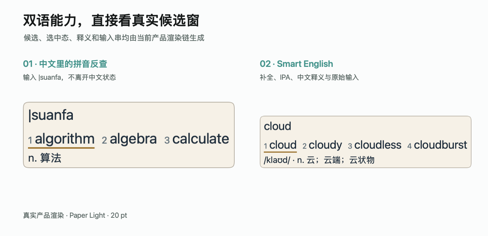
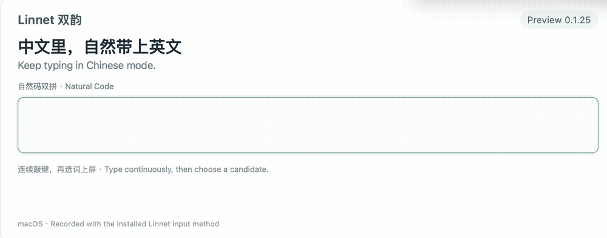
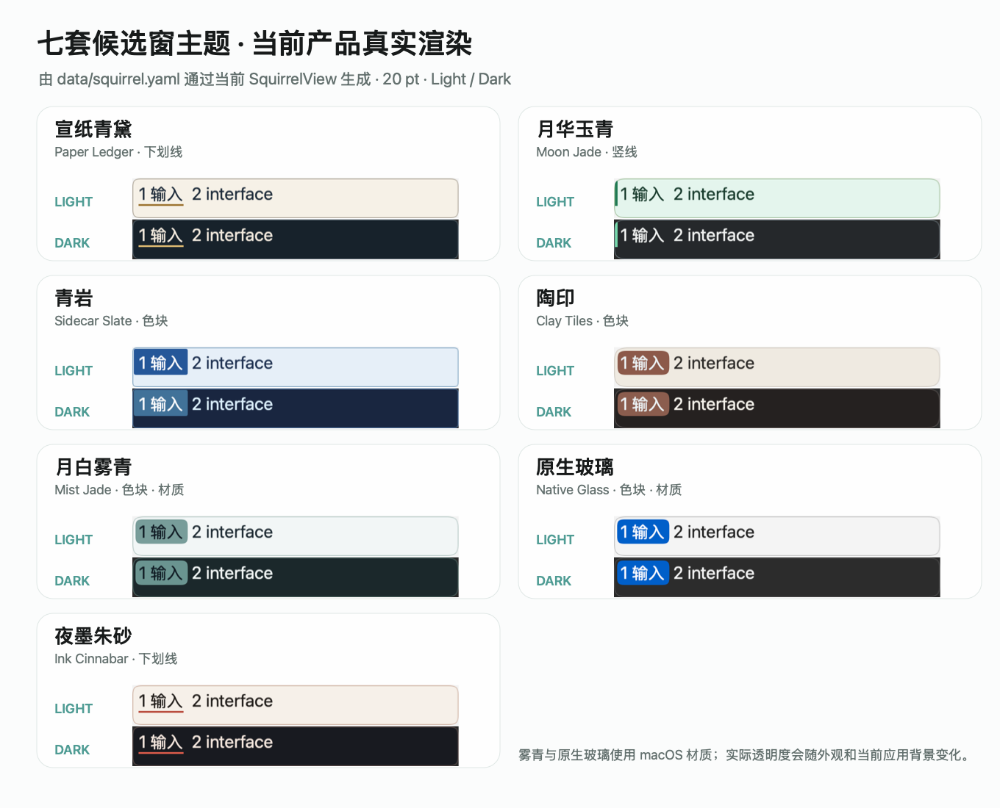

英文释义与音标
输入英文时，可在候选旁查看中文释义与音标。Smart English 同时提供补全、拼写纠错和下一词预测，离线可用。
音标与中文释义
可在设置中开启音标和中文释义，选词时一并查看。

翻译与查词
输入英文时，可在候选旁查看中文释义与音标。Smart English 同时提供补全、拼写纠错和下一词预测，离线可用。
可在设置中开启音标和中文释义，选词时一并查看。

在中文模式下，用当前全拼或双拼方案查找英文单词。候选中可直接查看中文释义。
全拼 |suanfa → algorithm；自然码使用 |srfa。
候选栏截图 · 宣纸青黛主题 查看原图
词典与语言数据
整合中英文词库与离线模型，校订读音和英文释义，补充词条。
完整安装包包含中英文词库与离线模型，无需自行搭配。中文以万象词库为基础，使用 RIME-LMDG 本地语言模型。
修订已确认的读音和排序问题，并从雾凇拼音选取补充词条，经过读音核对后合入中文词库。
校订英文单词的中文释义，补充英文词条，并整理拼音反查结果。
基于 Squirrel / librime，结合万象、雾凇拼音与 Hallelujah 的数据和能力。来源与修改说明
全拼与七种双拼方案共享词库和学习记录。方案、学习与简繁输出都可在设置中选择。
功能与配置
中文输入、常用词句和学习记录，都可在设置中管理。
其他输入功能
中文模式下也可输入完整英文单词，支持全拼与双拼。

自然码实机 GIF · 0.1.25 Preview
保留项目原始 GIF：macOS 虚拟机 Safari 中自动按键录制，原速播放。字母组合存在拼音与英文歧义时，需从候选中选择。
外观
每套主题都有浅色与深色外观，支持横排、竖排与自定义字号。

产品候选栏 · 浅色 / 深色 外观设置指南
日常输入在本机完成，不调用在线翻译或生成式模型，不采集使用数据。个人词典、学习记录与本地备份由你管理。
隐私与数据核心更新复用已安装的词库和模型，无需注销或重新添加输入法。程序与语言数据可分别更新。
更新与修复指南使用指南
按操作查找说明，包含输入示例和设置界面图示。
从项目发布页下载安装包。社区版没有 Apple Developer ID 签名或公证，首次打开时可能需要按安装指南手动确认。
首次安装完成后，保存工作，注销并重新登录一次。日常核心更新无需注销。
在系统设置的「键盘 → 文本输入」中添加 Linnet，再从菜单栏输入菜单选中它。
在终端中进入安装包所在目录，运行以下命令。将结果与同一版本发布页提供的 SHA-256 校验值比较，确认文件一致。
shasum -a 256 Linnet.pkg{kind=link}